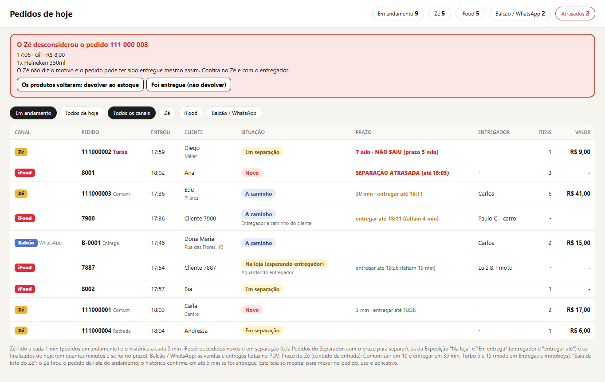
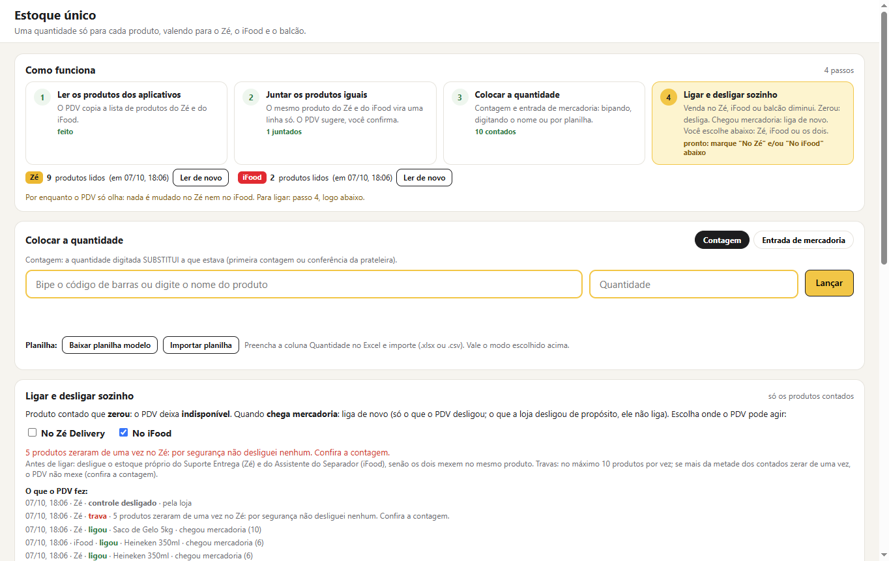
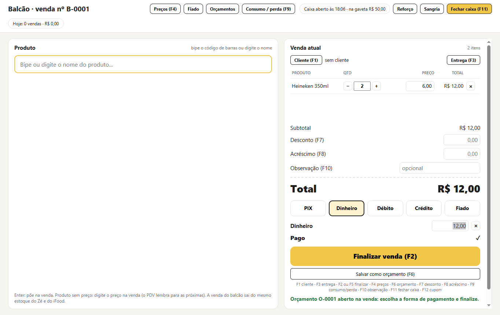
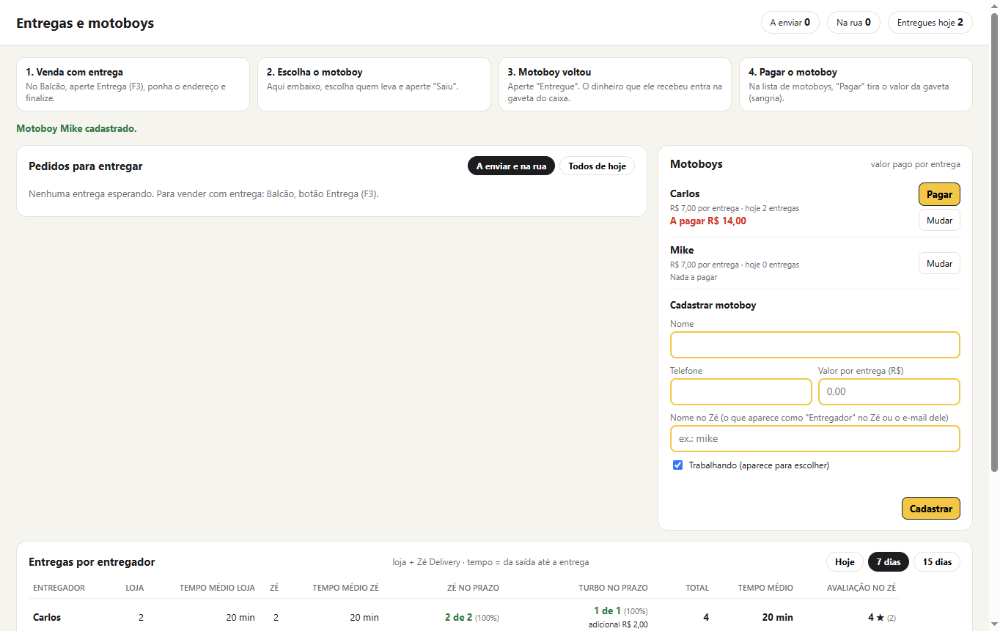
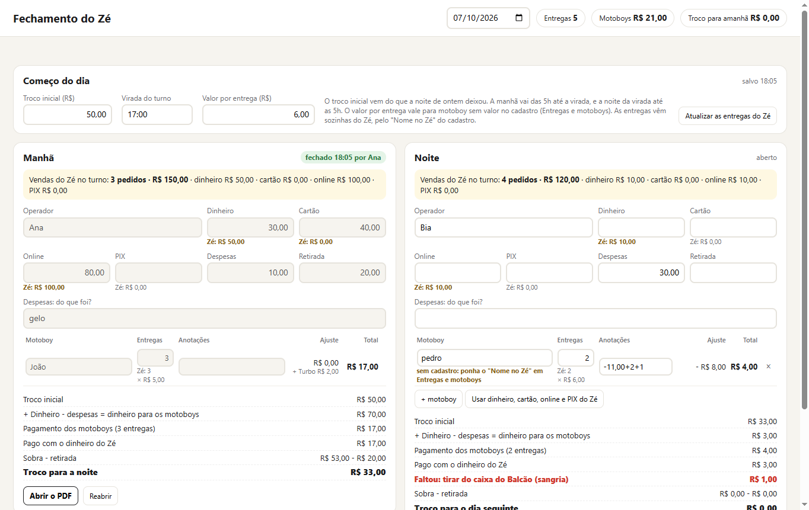
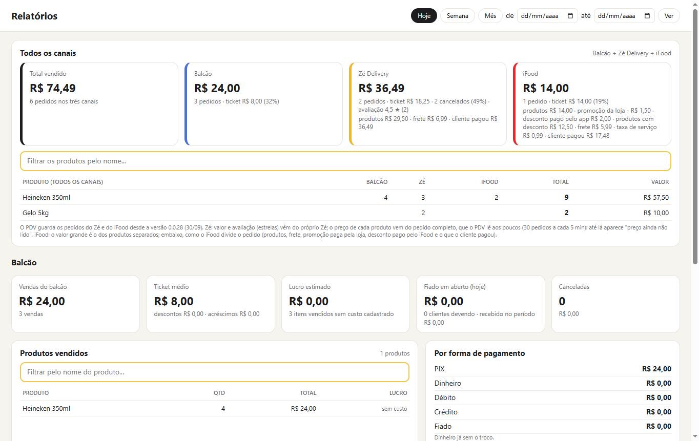

Todos os pedidos numa tela, um estoque só que desliga sozinho o produto que acabou nos aplicativos, caixa do balcão, fiado, entregas e motoboys. Feito para loja de bebidas.

Em um minuto e meio: pedidos, estoque único, balcão, motoboys, fechamento do Zé, impressão e relatórios.
Você diz quantas unidades quer vender no delivery. A cada pedido do Zé, do iFood ou do balcão, o PDV desconta. Acabou: o produto é desativado sozinho no Zé e no iFood, e você não recebe pedido do que não tem. Chegou mercadoria: ele ativa de novo.
Sem cancelamento por falta de produto, sem cliente reclamando e sem perder pontos no iFood. Você escolhe onde ele age: no Zé, no iFood ou nos dois.
Você continua usando o Zé, o iFood e o WhatsApp do jeito de sempre: eles abrem dentro do PDV, com o seu login.
Vendeu no Zé, no iFood ou no balcão, sai do mesmo estoque. Zerou: o PDV deixa indisponível nos aplicativos. Chegou mercadoria: liga de novo.
Uma lista só com os pedidos de todos os canais, o prazo correndo e os atrasados em vermelho. Motoboys com tempo de entrega e avaliação.
Venda bipando ou pelo nome, várias formas de pagamento, caixa com sangria e fechamento, fiado, orçamento, entrega pelo WhatsApp.
Coloque a quantidade que você tem para vender no delivery. Quando ela chega a zero, o produto sai do ar no Zé e no iFood; quando entra mercadoria, volta sozinho.

Abra o caixa, bipe e venda. Tudo com atalhos de teclado.

Veja quem entrega mais rápido, quem está dentro do prazo do Zé (Comum e Turbo) e a nota que o cliente deu.

A conta dos motoboys por turno, manhã e noite, com as entregas que vêm sozinhas do Zé.

Quanto vendeu no balcão, no Zé e no iFood, os produtos mais vendidos somando tudo e como cada valor se divide (produtos, frete, promoções).

O próprio PDV mostra os passos na primeira vez ("Começar a usar o PDV").
Baixe e instale no computador da loja. As atualizações chegam sozinhas.
Zé Delivery, iFood (App Separador) e WhatsApp, com os seus logins. Eles ficam guardados.
O PDV lê os produtos do Zé e do iFood, junta os iguais e você lança a quantidade.
Escolha Zé, iFood ou os dois. A partir daí, zerou desliga e chegou mercadoria liga.
Instale, preencha o cadastro da loja e use tudo por 7 dias, com os seus pedidos.
Não. O Zé Delivery, o App Separador do iFood e o WhatsApp abrem dentro do PDV, com o seu login, do mesmo jeito. O PDV lê os pedidos e cuida do estoque.
Só o que você ligar: deixar indisponível o produto que zerou e ligar de novo quando chega mercadoria, no Zé, no iFood ou nos dois. O resto é só leitura.
O balcão continua vendendo. Quando a internet volta, o PDV lê de novo os pedidos dos aplicativos.
Sim, e os dois já vêm incluídos na licença do PDV, sem pagar à parte: o Suporte Entrega no Zé (grupo dos motoboys) e o Assistente do Separador no iFood (portfólio ideal, mais vendidos, voz). Com o estoque único ligado, desliga-se o estoque próprio deles para não mexerem duas vezes no mesmo produto.
7 dias grátis. Depois, R$ 49,90 por mês por loja, pago por PIX, já com o Suporte Entrega e o Assistente do Separador.
Ainda não. Fale com a gente se você precisa da nota no balcão.